streets designed as destinations, not for moving cars
Space is a social product. — Henri Lefebvre
The scope of the project is the renewal of three mainstreets in Kyiv: Lesi Ukrainky Boulevard, Tarasa Shevchenko Boulevard and Beresteyski Avenue, including Baseina Street and Bastionna Street for logical connection with a vast recreational area — the Botanical Garden.
Three mainstreets are heavily loaded with traffic while being among the main commerce streets at the same time. The project aims to reduce through-traffic but maintains the existing function of movement of people and goods through these arterials. Emphasis on alternative modes of transportation through street design — cycling, public transport, walking, car sharing — and providing infrastructure for them will achieve a gradual switch to efficient and sustainable mobility, where the majority of trips will not be done by private car as they are presently.
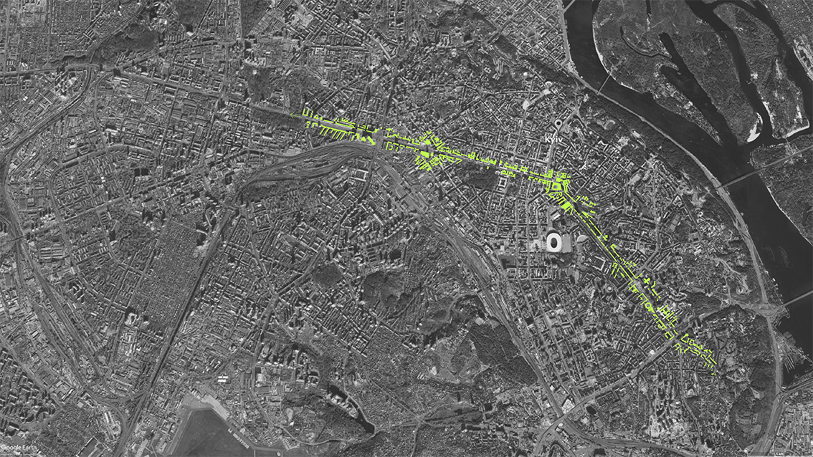
Network-scale diagram of the three mainstreets, indicating their location in the city.
CONTEXT & HISTORICAL BACKGROUND
Halytska Square and Beresteiskyi Avenue are especially loaded with traffic that moves people and goods in the west direction. Providing unified public transportation network with exclusive right-of-way reaching main satellite settlements outside Kyiv boundaries will significantly improve situation. The improved capacity of the public transport that has dedicated right-of-way will reduce the amount of trips taken by private car and will improve public realm that will create boost for commerce in the area.
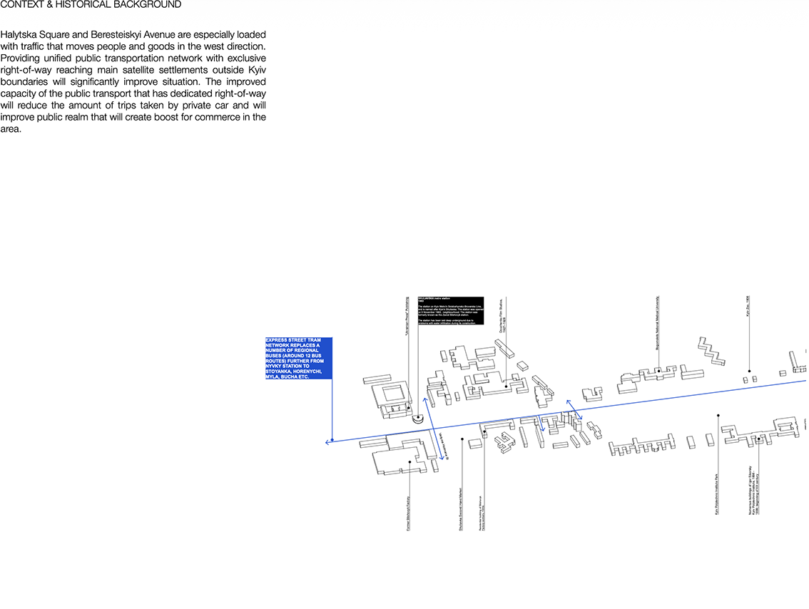
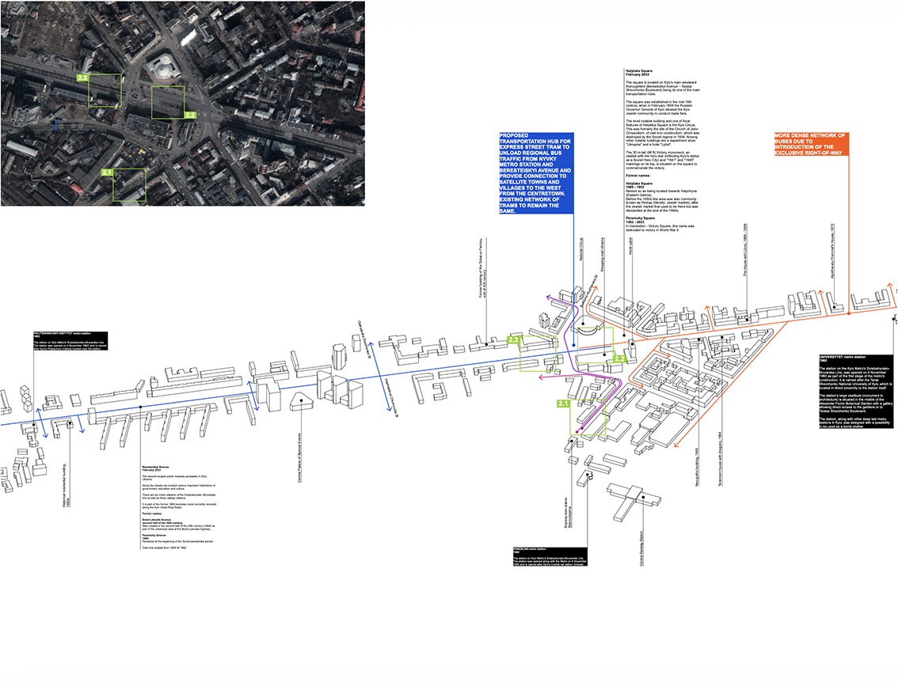
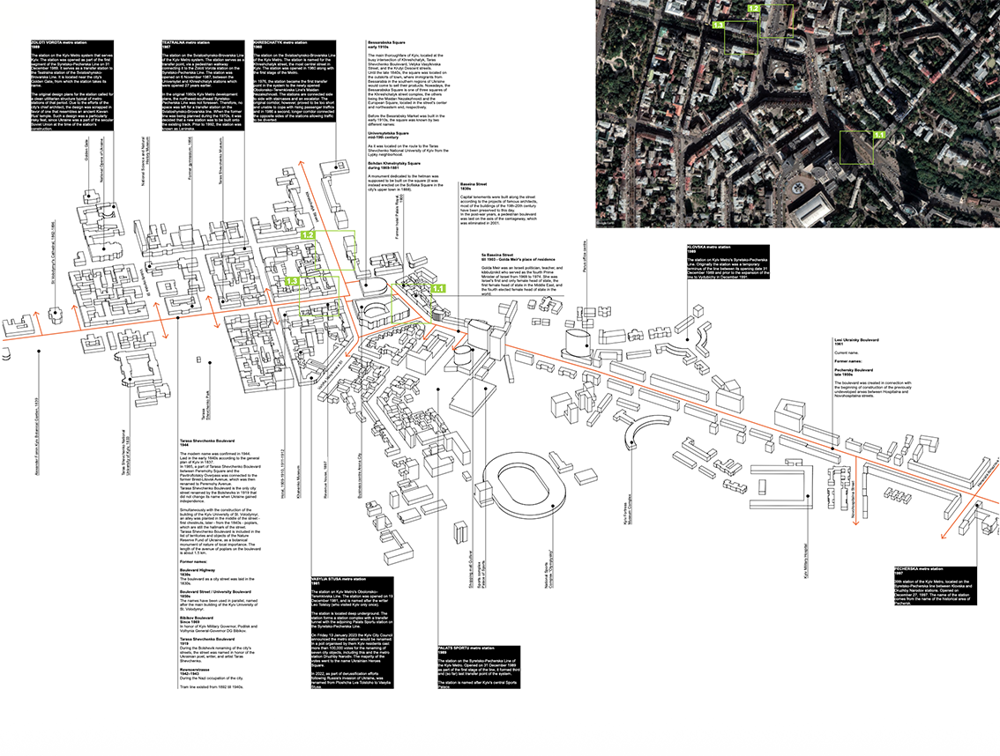
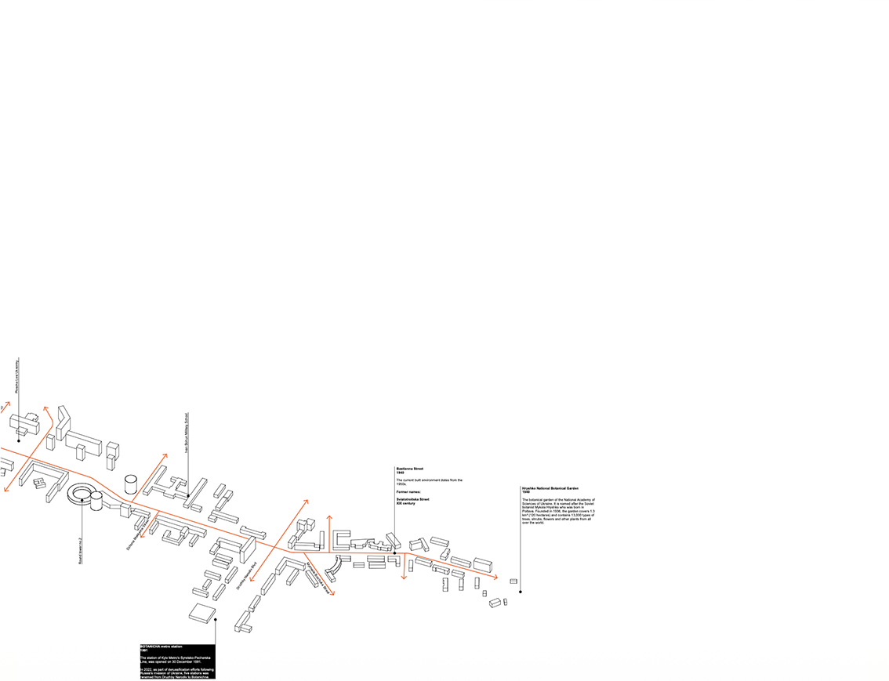
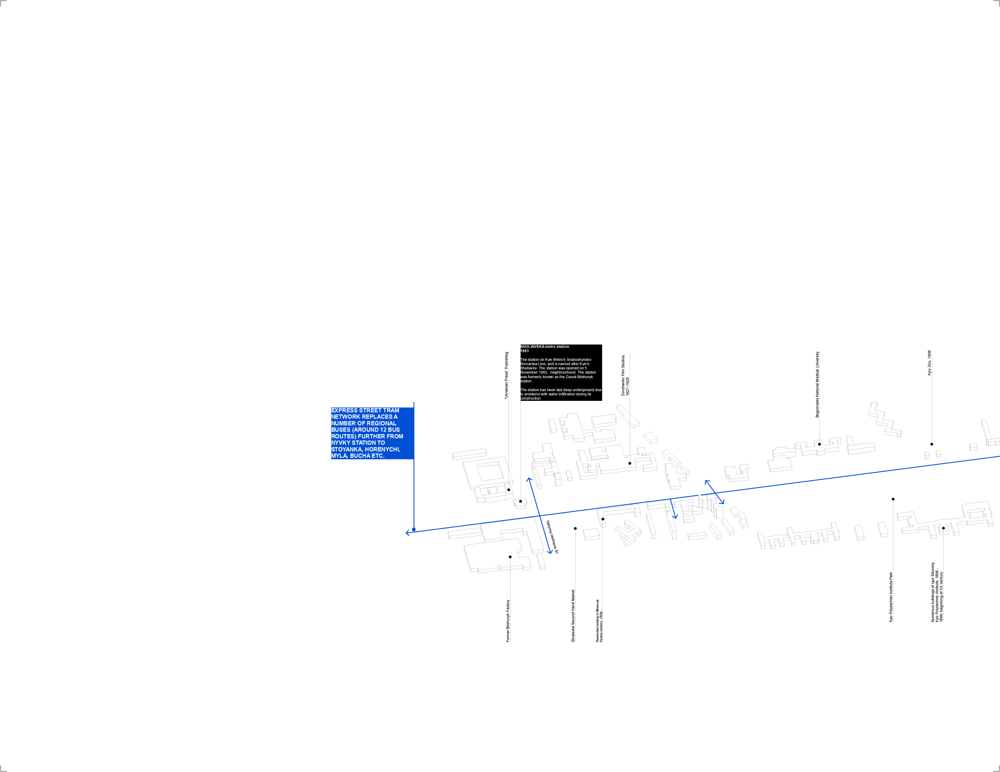
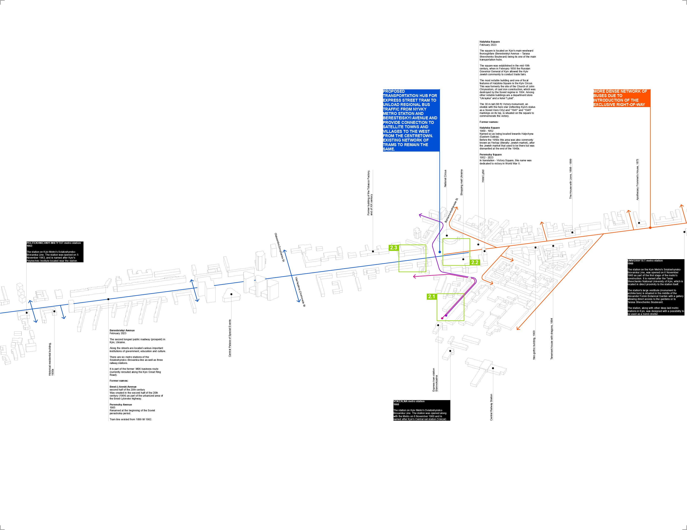
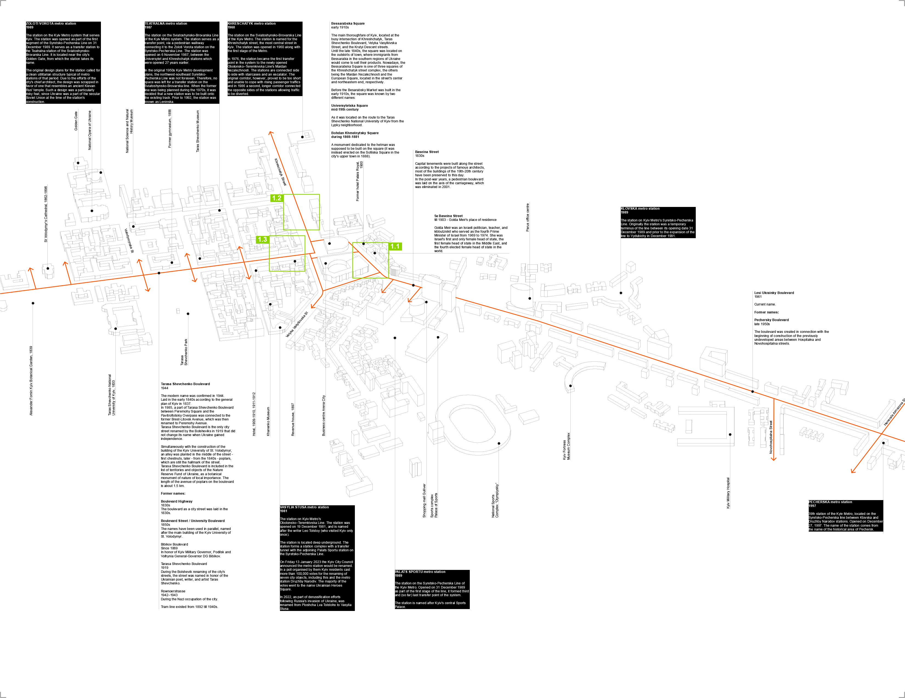
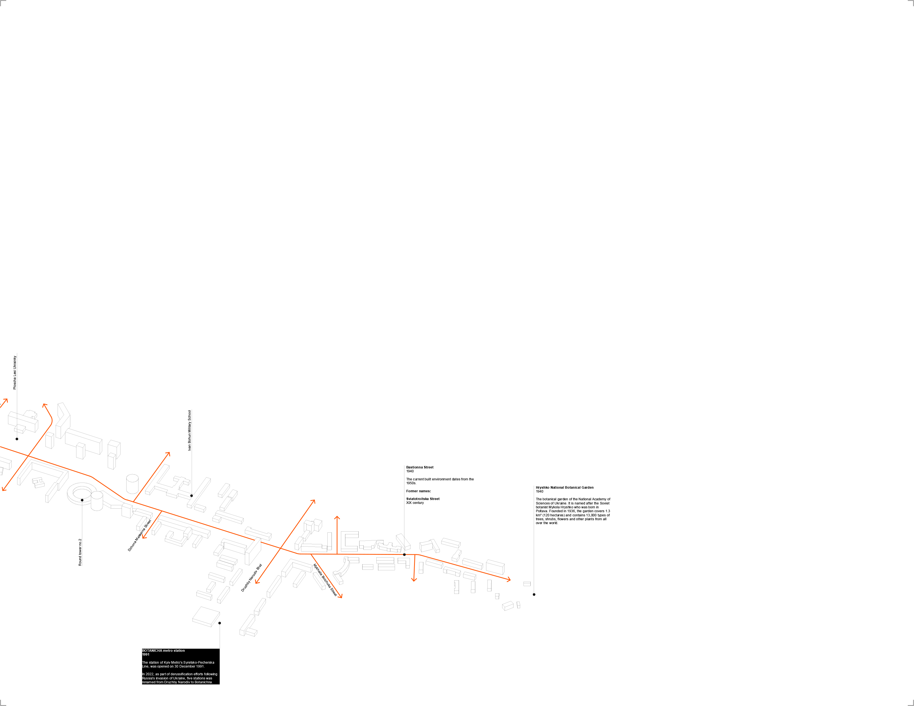
CRUCIAL INTERVENTION POINTS
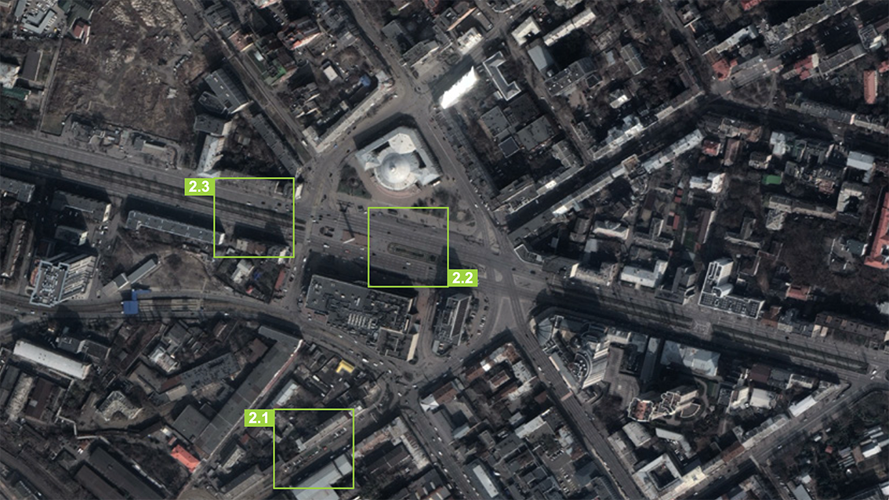
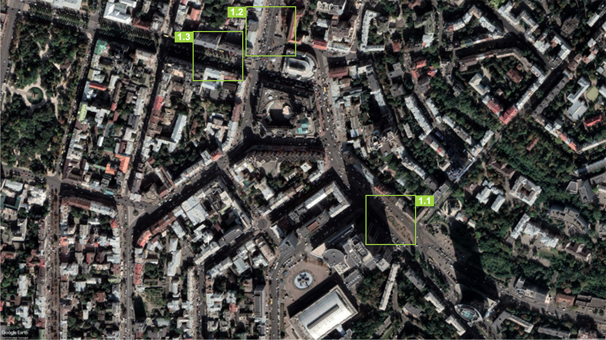
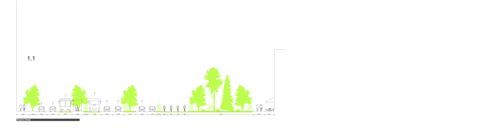
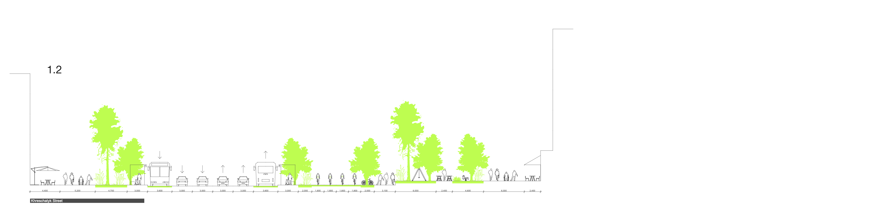
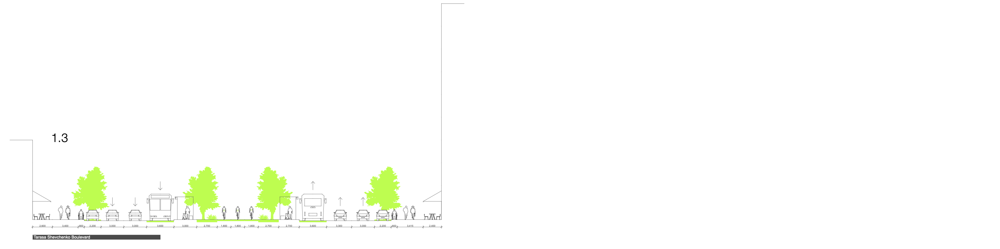
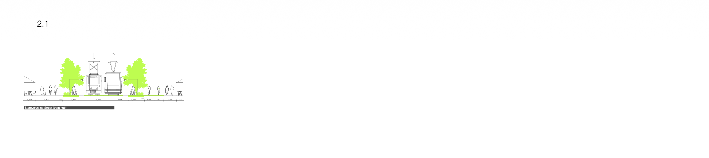
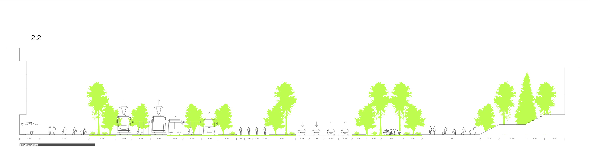
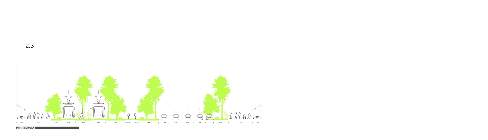
TWO AXIS OF REACH-OUT FOR THE EXPRESS TRAM WITH EXCLUSIVE RIGHT-OF-WAY
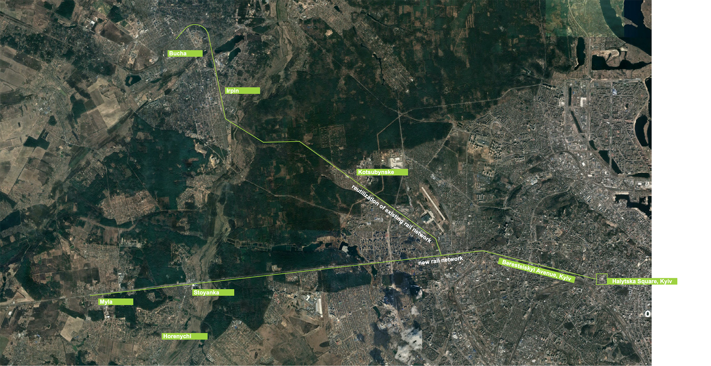
BUS STATION DESIGN
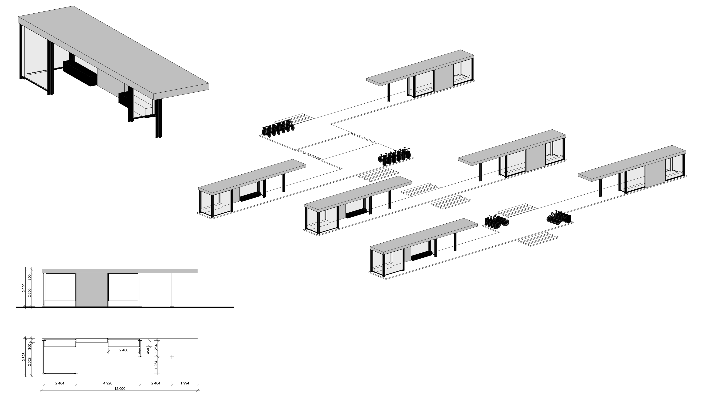
designed & built by masha vakula